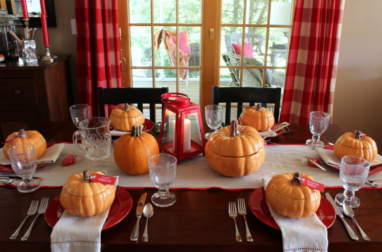
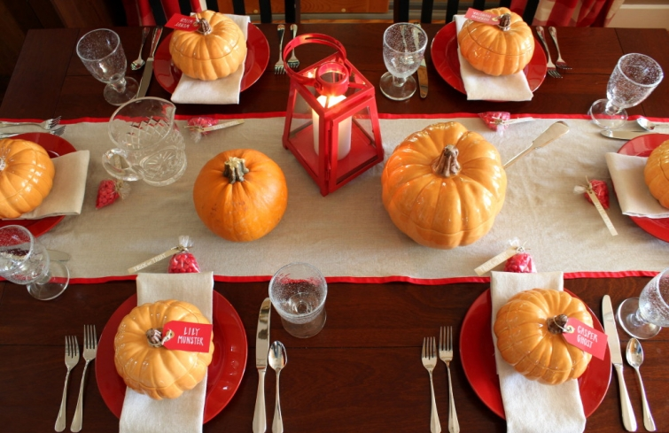

.png)
.PNG)
.PNG)
.PNG)
.PNG)
.PNG)
.JPG)
.JPG)
.PNG)
.PNG)


.jpg)
Don’t you just love the foods¬†and drinks of fall?
The other day, my husband and I were discussing the seasonality of foods because his office was hosting a fall luncheon. ¬†He asked, What would you take for that, and what makes something any more a fall food than any other season’s food?
Don’t you think foods and drinks belong to certain seasons because that is when you eat or drink them the most….like watermelon is a summer food and hot cocoa with marshmallows belongs to winter?
 I then told him that I loved fall foods, and he asked, Like what?
I then told him that I loved fall foods, and he asked, Like what?
Apple anything…apple tarts, apple fritters, apple pie…oh and warm apple cider!
And pumpkin anything…pumpkin muffins, pumpkin bread, pumpkin pie, pumpkin cheesecake, and our daughter’s favorite… Starbucks’ Pumpkin Spice Latte. üôÇ (only available in the fall.)
(These pumpkin cookies are actually Little Debbie pumpkin cookies that I decorated with red icing.)
So what do you think the people at work will bring, he asked, since it can’t be all desserts and beverages?
(Well actually it could, but I didn’t say that. üôÇ )
Chili, you’ll have a bunch of chili, probably some soups, and maybe an apple or cranberry salad.
I don’t think he was real convinced…until he saw the sign up sheet. ¬†What was the first thing signed up for?
Chili. üôÇ
But I think apples and pumpkins reign supreme for fall foods. Don’t you agree? And apple red and pumpkin orange were the colors that inspired all the fall decor around here.
In fact, the first room I decorated this season was the dining room.  I knew I wanted to use the old covered pumpkin bowls and tureens from Pottery Barn, but with a different color than I had previously had with them.  So I paired them with our always handy red plates and went from there.
Since we are getting ready for Halloween, I took a humorous approach to the place cards using character names from old tv shows…The Munsters, The Addams Family, and Casper the Friendly Ghost. ¬†I thought about writing dried drops of blood on the tag for the cinnamon candies, but again I couldn’t bring myself to use something scary, so I simply went with Trick or Treat. (October, I apologize again. üôÅ )
The color scheme continues in the kitchen…
with little pumpkins here and there…
and cookbooks in red and orange.
Totally off the subject here (because my brain wanders a lot.) ¬†I have had stuff¬†(i.e. picnic baskets, kitchen tools, large bowls, etc.) on top of my cabinets for like¬†forever. ¬†I took a photo of the cabinets below then looked at the picture and thought…boy that looks cluttered. (Why in the world didn’t I see that before??)
So before I went any further with the picture taking, I climbed up there and took everything down. ¬†Ahhhh…much better. üôÇ The only problem was…I then had to find a spot for all of it. üôÅ ¬†The bowls and serving things went on top of the cabinet in the dining room. ¬†The picnic baskets are still waiting on me to reorganize the cabinet on the porch, and I had to leave the big roaster over the desk because there was truly nowhere for it to go.
Okay, so where were we? Oh yes, the red and orange decor.
I put red mugs back in the flour and sugar jars.
And the tea and coffee tray has jack o’ lantern coffee.
The other tray got orange tags.
(I’m trying to use a less pretty – more scary font this month. üôÇ )
And pumpkins went to live on top of the refrigerator.
(At least for October. üôÇ )
And that brings us to the end of the tour for today…but there is still more to come. ¬†The next time we get together we will tour the playroom and more.
Since we have been proclaiming our love of fall food and drink here, I am wondering what your favorite is (besides Halloween candy. üôÇ ) ¬†I would have to say mine is the Cheesecake Factory’s pumpkin cheesecake…¬†yum!
So what’s your favorite?

p.s ¬†Oh I almost forgot something! I copied the recipe on the chalkboard at the top of the post from a cookbook, and I have not tried it out yet. ¬†Do you think that 2 tsp. of baking soda is correct? ¬†That just seems like a lot to me. ¬†Have any of you made a pumpkin spice cake from a recipe like that one? ¬†I would love to know before I make it. ¬†Thanks for your help! üôÇ


.PNG)
Hi Kelly,
I really love your fall decor…you did a great job of blending the reds and oranges. I get so much inspiration from your blog. I also had been toying with the idea of clearing the “stuff” off the tops of my kitchen cabinets. After reading your blog, I took it all down …baskets, plastic plants(ugh) ) and left it clean and simple. It really opened my kitchen up and showcased some exposed brick.
Thank you for your wonderful blog, ideas and inspiration!
Barb
——————————————————————-
I’m so glad you found some inspiration here Barbara. üôÇ Hooray for the clean space above the kitchen cabinets! I can’t believe you had exposed brick up there that was covered up. I know that looks good now!
Thank YOU for reading and commenting.
Kelly
I agree 100% there are seasonal foods and fall foods are my favorites! Everything you listed I associate with the season. And I try to indulge in as many as possible each year. üòâ This week alone I have had apple cider donuts, apple butter, cooked apples and cider. I plan to bake a pumpkin cake this weekend. Haha, maybe I have overindulged. üòâ My pumpkin cake recipe is very similar but uses self rising flour so no need for soda. I think my favorites are apple cake, apple crisp and cushaw pie that we have every year at Thanksgiving. Couldn’t just pick one. üôÇ As always I love all your decorative touches. The pumpkin dishes are perfect! Love all your attention to detail. Now, I feel inspired to go add a few more touches and pops of color around my house!! üôÇ
———————————————————————
You have had some yummy treats this week Gina! Save me a slice of your pumpkin cake. LOL
Enjoy adding those pops of color to your home. It is QUITE colorful here these days!
Kelly
Good afternoon! I feel like we are kindred spirits! I love all things red and gingham and Susan Branch and I used to be a first grade teacher before staying home to raise my kids. Anyways, wanted to tell you two things. One, I’m so inspired by your orange/red combination for Halloween. My living room has bright red walls and I always found it difficult to decorate for Halloween! Not any more. Also, next time you come to new haven to visit you son, you must make a trip to Essex. You will LOVE it.
—————————————————————–
We must be sisters Nina! üôÇ Yes, I love all things red and gingham and Susan Branch, and I taught first grade for about 10 years (the most exhausting and challenging grade there is to teach in my opinion.) Yay to the red and orange for Halloween! And we will add Essex to our list of places to visit on our next escapade up to Yale. Thank you for the recommendation!
Kelly
I read a ‘few’ blogs, and I’d say you are #1 when it comes to originality and flair. Subtle touches go a long way in my book. I’d love to see your decorating stash and maybe take a few pointers. As I have gotten older seems my Saturdays are mostly cleaning, grocery shopping and little puttering. I just don’t have the impetus to do much holiday decorating like I used to. Oh well, I can live vicariously through you and there’s nothing to put away when the season ends! Beautiful photos!
——————————————————————
Wow! That is quite a compliment Becky. üôÇ Most of my decorating stash is up in the attic in big red tubs organized by month and labeled with a chalk pen. Pillows and fabrics live in the big closet in the workroom, and dishes live in the cabinets in the dining room. The good thing about pumpkins is you don’t have to put them away when the season is over..just throw them out…so no storage problems with them. üôÇ
Kelly
Good morning Kelly,
I loved this post. I always start commenting in early September (when it’s still hot) that I cannot wait until its time for fall food! There are soups, stews, casseroles and the like that we simply don’t eat during the warm months.
The red and orange is genius. It looks great together and its fun that you decorated the pumpkin cookies with red.
Photographs are such a great way to analyze our own decorating. I have taken a picture and then thought, why is that sitting there?! üôÇ
Have a great week.
xo,
Karen
P.S. October and I have mended fences and I’m in love once more. üôÇ
———————————————————————-
I am getting hungry from all the foods you listed Karen!
Thank you for the compliment on the bright color scheme for the season. It is quite colorful here these days.
You are right about using photos to help “see” things with fresh eyes. It really does help.
So glad October has finally gotten itself back to normal for you. I would hate for you to not love your favorite season!
Kelly
Love your fall decor….especially the Pumpkin Table! I don’t think I would have ever paired red and orange, but I love the way it turned out! I have a great apple cobbler recipe that I like to make during the fall, as well as a pumpkin dump cake and pumpkin/chocolate cheesecake….all three are yummy! Thanks for sharing – looking forward to more of your fall decor!
Blessings,
Lanita
———————————————————————-
Yum!!!!!!!!!!!!! A pumpkin chocolate cheesecake sounds heavenly! Thank you for visiting the blog and taking the time to leave your comment Lanita. I so appreciate it. üôÇ
Kelly
I am loving the red with orange…and why not?…fall is about apples and pumpkins. My favorite fall foods are caramel apples, pumpkin pie with a layer of cheesecake, apple pie, chili, and turkey and dressing….but that is another month! I was recently thinking about how our family embraces the foods that surround seasons and holidays. I mean, black-eyed peas are not my favorite food but we must have them on New Year’s Day.
———————————————————————
How in the world did I forget turkey and dressing?!! It is more Thanksgiving’s food than Christmas’ to me. Tradition makes us eat a lot of things; doesn’t it?
Kelly
I have really enjoyed the trip!! Thanks for taking us along. Also, picked up the Christmas magazine with you and your home featured and it was a beautiful article. I really liked the gingerbread houses in the glass jars. Last but not least “Come Rain or Come Shine”. Was a pure delight!!! I believe it was my favorite of the series. Thanks again and enjoy the rest of fall.
———————————————————————
Thank you Linda. I am happy that you enjoyed all the exploring. And thank you for getting the magazine and reading our feature. Those gingerbread houses just say “Christmas” to me. üôÇ Wasn’t Come Rain or Come Shine wonderful?!! I could say it is my favorite too. I laughed. I cried. I laughed some more. And to think she has yet another one in the works! Can’t wait!
Kelly
Oooh I think I’ll have to try some Pumpkin pie and Pumpkin Cheesecake whilst I’m in the US …I love The Cheesecake Factory …so do my family! At home anything with apples… pie,crumble,strudel and spiced apple cider …yummy!Or pumpkin and sweet potato soup.
As always your rooms look amazing Kelly! I like the orange and red shades together.Your attention to small details really adds to the overall effect.
Rosemary
———————————————————————-
You are making me hungry! (Good thing dinner is going in the kitchen. üôÇ ) Glad you liked all the details of the decorating, and as always, thank you for reading!
Kelly
Hi Kelly. How much fun it would be to be a guest at your house….in any season! Such attention to detail. My favourite food at this time of year is apple crisp and pumpkin pie with whipped cream. Simple, classic and oh, good! Oh, and baked squash with maple syrup!
————————————————————————
Love apple crisp too…served warm with ice cream! I have never made baked squash, and I would have never thought to top it with maple syrup. Might just have to give that a try this year. Sounds interesting!
Kelly
Little Debbie Pumpkin Delights cookies and my Mom’s pumpkin cake with cream cheese icing. Her recipe calls for 2 teaspoons of baking soda and baking powder. üôÇ
——————————————————————-
Yum to anything with cream cheese icing! Thank you for the info on the baking soda measurement. üôÇ Now I just need to get busy baking that cake!
Kelly
Kelly,
It looks so cozy and inviting. I am ready to grab a PSL and sit awhile and chat perhaps on your red stool while you bake that yummy looking cake. My favorite thing to bake this time of year is a pumpkin praline cake. It is to die for and super sweet and yummy! I can’t wait to see how your playroom is decorated! I am thinking green and black in there perhaps? Your red and orange theme is so you and I really like it but the green and black is so me. Thanks for sharing. Take care.
Dawn
————————————————————————-
Pumpkin praline does sound to die for! I know I would love that…anything with pumpkins and pecans sounds great. Yes to green and black in there…along with a good dose of orange for the season. You will like it. üôÇ
Kelly
So pretty and festive! We hit record highs here in Texas just a few days ago, so I am a bit behind in my fall spirit. But I’m glad to share yours.:-)
PS Love the tags and the red/orange combo is stunning!
———————————————————————
Aw man! Record highs? Not good for October, so I can understand your not being in the mood for fall. Thank you for the compliments on the tags and color scheme. üôÇ
Kelly
I am loving your fall decorating with the red and orange combined. Some of my favorite fall treats are the pumpkin roll with cream cheese, caramel apples and I love the pumpkin cheese cake from the Cheesecake Factory too!
—————————————————————–
Oh yes! Love a good pumpkin roll! I have never made one, but I do love to eat the ones from Fresh Market. üôÇ I wish Cheesecake Factory would serve that pumpkin cheesecake year round. Don’t you? üôÇ
Kelly
I’m guilty of one of my fall passions…watching football yesterday….didn’t even check my iPad for new posts! I’m a firm believer in seasonal foods. As a matter of fact…my hubby and I were discussing why we don’t have meatloaf in the summer? My answer..because it’s a cool weather dinner…..simple as that! I love how you used red with orange…as I’ve said before….you have a happy home! Favorite fall foods…yes to Apple anything! Hope you get to enjoy this beautiful fall day! üòâ
———————————————————————-
Watching football is certainly one of the best of the fall activities. My husband would eat meatloaf in any season. üôÇ But I agree that it seems more appropriate in the fall. WE have been having some gorgeous weather. Need to work in the yard!
Kelly
What I love best about your home are all of the little details that you create — changing the colors for each season, from the cookies in the jar to the cookbooks on the counter. I always take my time to look at all of your photos, noticing everything. Thank you for sharing it with us!
———————————————————————–
Thank you for appreciating all those little details Kim. I love that you check out all the photos so well! üôÇ
Kelly
I have to agree with you on scarey Halloween decor, it’s fine for others but I’ll pass. Your covered pumpkin tureens are perfect, how fun! I’ve baked the Old Fashioned Apple Cake from the King Arthur web site twice already this fall. It is delicious and the brown sugar icing is just that,” The icing on the cake!” I’d highly recommend it !
————————————————————————
I love a fresh apple cake with a praline sauce made with brown sugar and whipping cream…I think. They are probably very similar. And I could eat the icing straight up without the cake it is so yummy! Sounds like your cake. üôÇ
Kelly
Ok, so I just stole a lot of your ideas and my house looks warm and inviting. Almost as good as yours! üôÇ you have such a lovely way of making everything look festive and comforting!
I’ve a recipe that calls for 2 teaspoons of baking soda and it is yummy. My guess is yours will be too.
———————————————————————–
Steal away! That’s why the photos are on here. üôÇ Thank you for your kind compliment on the house, and thank you for the info on the baking soda. Glad to know that 2 tsp. is possibly “normal.” üôÇ
Kelly
Hi Kelly, about the seasonality of food….I think it also ties into memories of family celebrations and traditions…just a thought.
About the recipe…I make a pumpkin bread that everyone enjoys and I get many requests for the recipe which came from the L A Times back in the early 90’s. The recipe is similar to yours but mine has increased flour, sugar, water, and includes 1 tsp nutmeg. Mine calls for 2 tsp of soda. So it maybe just fine. If time permits I’ll try yours tomorrow.
BTW I finally found that Christmas issue of BH&G…your home is the star of the issue, in my opinion. Wonderful. Kudos to all for the work done.
———————————————————————-
You are probably right about the seasonality with family traditions and all (and probably also the connection to when certain foods are available for harvest.) Glad to know you think the soda proportion is okay. I have not made it yet, but will try to soon.
Thank you so much for the kind comment about the magazine feature, and I am so glad you were able to finally put your hands on an issue. üôÇ
Kelly
Kelly, I love the way you use your cookbooks well, books all over to bring out the colors in the seasonal decor. Always lovely..
Question for you. Do you use chalk board markers or chalk for your chalkboard? And… do you do a different recipe each month? Such a cute idea.
———————————————————————–
Thank you Sandy. I use both the marker and the old fashioned chalk, but lately it seems that I am using the marker more. It is easier to me than the chalk…which I have to trace over and over to get it bright enough to show up in a photograph. I do a different recipe almost every month except the one in January usually is up for both Jan. and Feb. and the June one may stay up for both June and July. I think other than that it is a different one each month.
Kelly
Your post came at just the right time! I was looking at the last one ( letter to October) and was wishing for the new one and ” hocus pocus” there it was! Saturday at the beach during Biketober is quite noisy and football games back to back! SO I was wanting some sweet diversion and a “take me away Calgon” moment — loved ALL the red/orange, pumpkins and thinking about fall foods! I really like anything pumpkin and try different recipes. I think the most unusual pumpkin one was pumpkin burgers ( sloppy joes!) This week I made my first sweet potato pie and tried out my new Nuwave oven I got especially for my micro sized condo kitchen— pork tenderloin with root vegetables/squash/apple combo! My newest favorite cafe is Peach Valley. Do you have them in your area? Apple fritters, sweet potato fries with maple hot spice dip and peach ice tea!! Yum! Thank you for my “treat” for the evening!;)
————————————————————————-
Hocus pocus for sure! Glad to give you a Calgon moment amid Biketober. (Such a funny word!) Not sure I would like pumpkin burgers if they actually do have pumpkin in them…hmmm. Your pork tenderloin sounds divine!! Never heard of Peach Valley Cafe, so I jumped over to their website. Looks like they are a Florida only restaurant right now (which is kind of strange because Georgia is the “Peach State.” What’s up with that?) There were quite a few good looking things on the menu. How I wish I could get my father in law some of their apple fritters. We were just talking about fried apple pies the other night!
Hope you are doing well. üôÇ üôÇ üôÇ
Kelly
I love how you incorporate pictutures of your children in the kitchen. Your attention to detail is impeccable. I also love that you have curtains above your sink. I am wondering if they get splattered and dirty? I would love to replace the shade I have now but am worried the curtains would get dirty.
———————————————————————–
The kitchen curtains do not get dirty at all. If you will look closely, you will see that there is something in front of each of the panels, so nothing really touches them. If they were over by the stove, I image they would get grease on them. The only big mess place in our kitchen (besides the island) is right in front of the cookbooks. Then I just wipe off their spine if something splatters on them.
Kelly